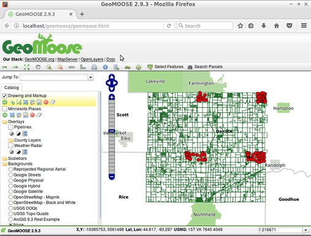

GeoMoose¶
Portal Web GIS¶
GeoMoose es un marco de mapeo basado en navegador para mostrar datos cartográficos distribuidos. Es particularmente útil para la gestión de datos espaciales y no espaciales dentro de las oficinas municipales, municipales y de condado (a partir de las cuales se originó GeoMoose). Amplía la funcionalidad de MapServer y OpenLayers para proporcionar servicios incorporados, como operaciones de identificación detallada para visualizar y organizar muchas capas, operaciones de selección y búsquedas de conjuntos de datos.
GeoMoose es rápido y funciona bien con cientos de capas y/o servicios a la vez. Los datos de múltiples guardianes pueden ser mantenidos con diferentes herramientas y en horarios diferentes, ya que cada capa de mapa tiene su propio conjunto de archivos de configuración para editoriales, símbolos, plantillas, así como datos de origen. horarios
La interfaz de usuario es fácilmente configurable y se pueden agregar servicios adicionales a través de una arquitectura modular.
{kind=link}
Características Principales¶
- Mantenimiento de datos distribuidos entre múltiples propietarios.
- Acceso a mapas desde: MapServer, Google, VirtualEarth, Tilecache, ArcGIS REST, WMS.
- Configure vistas múltiples de fuentes de datos.
- Descubre y filtra desde catálogos de datos.
- Herramientas: medida, dibujo, consulta, desvanecimiento, reordenamiento, reproyección, salto a zoom, lecturas de coordenadas, …
- Muestras: MapViewer, Bird’s Eye, Side Menu, Navigation, Tabbed User Controls.
- Archivo de configuración de MapBook basado en XML para interfaz de usuario, capas de origen y herramientas.
- Integración con Mapserver.
- El diseño modular facilita la integración con sistemas no espaciales (como la gestión de activos).
- Publica un número casi ilimitado de capas.
- Impresión en PDF.
Estándares implementados¶
- WMS
- WFS (cliente)
- WFS-T (cliente)
Detalles¶
Sitio web: http://www.geomoose.org/
Licencia: licencia basado enMIT http://www.GeoMOOSE.org/info/License.html
Versión de software: 3.2.0
Plataformas compatibles: GNU/Linux, Mac OSX, MS Windows
Soporte comercial: http://www.geomoose.org/info/commercial_support.html
Soporte de la comunidad: http://www.geomoose.org/info/mailing_lists.html